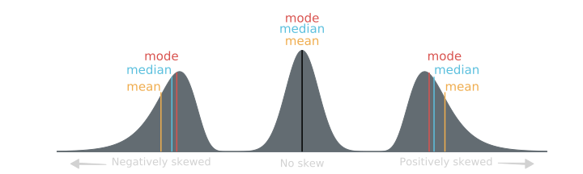
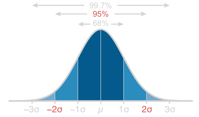
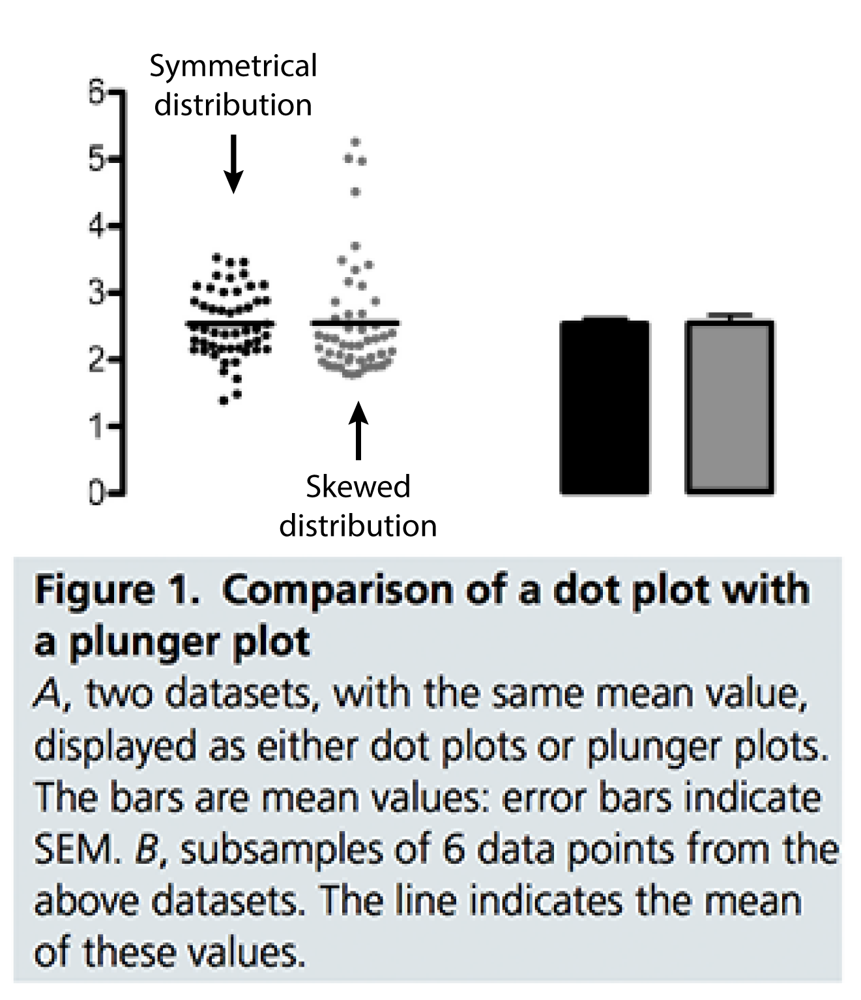
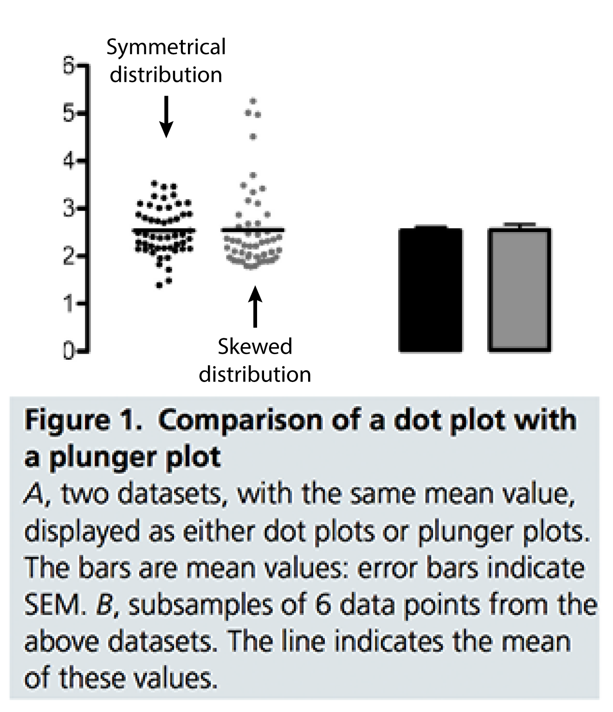
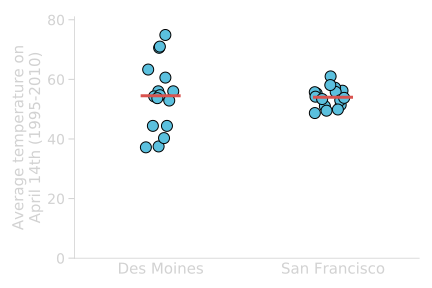

Last time
How to make decisions with statistics
Basic statistical terminology
Data, dataset, statistical study, observational units, variables, outliers, population, sample
Importance of visualisation to better understand data
=> Soho epidemics map
Why visualize your data?
Anscombe's quartet
| Dataset #1 | Dataset #2 | Dataset #3 | Dataset #4 | |||||
|---|---|---|---|---|---|---|---|---|
| x | y | x | y | x | y | x | y | |
| 10 | 8.04 | 10 | 9.14 | 10 | 7.46 | 8 | 6.58 | |
| 8 | 6.95 | 8 | 8.14 | 8 | 6.77 | 8 | 5.76 | |
| 13 | 7.58 | 13 | 8.74 | 13 | 12.74 | 8 | 7.71 | |
| 9 | 8.81 | 9 | 8.77 | 9 | 7.11 | 8 | 8.84 | |
| 11 | 8.33 | 11 | 9.26 | 11 | 7.81 | 8 | 8.47 | |
| 14 | 9.96 | 14 | 8.1 | 14 | 8.84 | 8 | 7.04 | |
| 6 | 7.24 | 6 | 6.13 | 6 | 6.08 | 8 | 5.25 | |
| 4 | 4.26 | 4 | 3.1 | 4 | 5.39 | 19 | 12.5 | |
| 12 | 10.84 | 12 | 9.13 | 12 | 8.15 | 8 | 5.56 | |
| 7 | 4.82 | 7 | 7.26 | 7 | 6.42 | 8 | 7.91 | |
| 5 | 5.68 | 5 | 4.74 | 5 | 5.73 | 8 | 6.89 | |
| Regression | ||||||||
| Dataset #1 | Dataset #2 | Dataset #3 | Dataset #4 | |||||
|---|---|---|---|---|---|---|---|---|
| Mean | 9 | 7.5 | 9 | 7.5 | 9 | 7.5 | 9 | 7.5 |
| Variance | 11 | 4.1 | 11 | 4.1 | 11 | 4.1 | 11 | 4.1 |
| Correlation | 0.86 | 0.86 | 0.86 | 0.86 | ||||
| Regression line |
y = 3 + 0.5x | y = 3 + 0.5x | y = 3 + 0.5x | y = 3 + 0.5x | ||||
Why visualize your data?
Describing a dataset
- What is the general shape of the data?
- Where are the data values centered?
- How do the data vary?
These are all aspects of what we call the distribution of the data.
General shape of a distribution
A symmetric distribution is one in which the left and right hand sides of the distribution are roughly equally balanced.
A skewed (non-symmetric) distribution is a distribution in which there is no such equal balance. Right-skewness refers to a longer right tail, while left-skewness correspond to a longer left tail.
A uniform distribution is a specific symmetric distribution in which all outcomes are equally likely.
Proportions for categorical variables
Proportions are also called relative frequencies and we can display them in a relative frequency table.
Is there one true love
for each person?
(Phone survey, 2010)
| Response | Frequency | Relative Frequency |
|---|---|---|
| Agree | 735 | 0.28 |
| Disagree | 1812 | 0.69 |
| Don't know | 78 | 0.03 |
| Total | 2625 | 1.00 |
Notation for a proportion:
The proportion for a sample is denoted $\overset{\hat{}}{p}$ (read “p-hat”)
The proportion for a population is denoted $p$.
Distribution of proportion data
Note:
Lengths are easier to visually compare than area
Distribution of proportion data
Stacked bars (overall quantity)
Layered bars (distribution of values in the categories)
Grouped bars (comparison of categories + items)
Distribution of quantitative variables
A common way to visualize the shape of a moderately sized dataset is a dotplot.
| Species | Longevity | Species | Longevity | Species | Longevity | Species | Longevity | Species | Longevity |
|---|---|---|---|---|---|---|---|---|---|
| Baboon | 20 | Chimpanzee | 20 | Fox | 7 | Leopard | 12 | Rabbit | 5 |
| Black bear | 18 | Chipmunk | 6 | Giraffe | 10 | Lion | 15 | Rhinoceros | 15 |
| Grizzly bear | 25 | Cow | 15 | Goat | 8 | Monkey | 15 | Sea lion | 12 |
| Polar bear | 20 | Deer | 8 | Gorilla | 20 | Moose | 12 | Sheep | 12 |
| Beaver | 5 | Dog | 12 | Guinea Pig | 4 | Mouse | 3 | Squirrel | 10 |
| Buffalo | 15 | Donkey | 12 | Hippopotamus | 25 | Opossum | 1 | Tiger | 16 |
| Camel | 12 | Elephant | 40 | Horse | 20 | Pig | 10 | Wolf | 5 |
| Cat | 12 | Elk | 15 | Kangaroo | 7 | Puma | 12 | Zebra | 15 |
Note:
For this particular dataset, values are integers and can be easily stacked.
Simplifying a dotplot
A dotplot can be hard to build, and visually dots can overlap if the values are very similar.
1- Define "boundaries"
2- Count the number of elements inside each zone
This is the process to make what is called a histogram.
The histogram
Dataset:
| 36 | 25 | 38 | 46 | 55 | 68 | 72 | 55 | 36 | 38 |
| 67 | 45 | 22 | 48 | 91 | 46 | 52 | 61 | 58 | 55 |
| Bin | Frequency | "Scores" included |
|---|---|---|
| 20-30 | 2 | 25, 22 |
| 30-40 | 4 | 36, 38, 36, 38 |
| 40-50 | 4 | 46, 45, 48, 46 |
| 50-60 | 5 | 55, 55, 52, 58, 55 |
| 60-70 | 3 | 68, 67, 61 |
| 70-80 | 1 | 72 |
| 80-90 | 0 | -- |
| 90-100 | 1 | 91 |
Note:
- Number of bins = $\sqrt{n}$ is a good start to explore your data.
- Usually all the bins cover the same data range (similar bin width), but uneven bins can also be constructed.
The characteristics of a histogram
The mean
A common measure of central location is the (arithmetic) mean. It is sometimes called the average.
$\bar{x}=\sum x_{i}$
$\bar{x}$ for a sample (read "x-bar")
$\mu$ for a population
Which corresponds to:
$\bar{x}=\frac{x_{1}+x_{2}+...+x_{n}}{n}$
$\bar{x}=\frac{\textrm{sum of all the observations}}{\textrm{number of observations}}$
The trimmed mean
A trimmed mean refers to the calculation of the mean after discarding given parts of a sample (or distribution) at the high and low end (typically discarding an equal amount of both).
The use of a trimmed mean "helps" eliminate the influence of data points on the tails that may affect the traditional mean.
The median
The median of a set of ordered data values is:
- the middle entry (for an odd number of entries)
- the average of the middle 2 values (for an even number
of entries)
The mode
The mode is the value that occurs most often in the dataset. If no value in the dataset is repeated, then there is no mode this particular dataset.
What is the mode in the dataset below?
| 4 | 5 | 9 | 5 | 11 | 7 | 5 | 3 | 7 | 8 | 6 | 5 | 12 |
Resistance
The term resistance is related to the impact of outliers on a statistic. In general, we say that a statistic is resistant if it is relatively unaffected by extreme values.
The median and the mode are resistant, while the mean is not.
Averages can be misleading
Pick your central descriptor wisely
Number of children per household in China (2012)
Mean: 1.55
Median: 1
More representative of the "typical" 2012 family
(One Child Policy)
Other locations
The minimum is the smallest number in the (sorted) dataset.
The maximum is the largest number in the (sorted) dataset
The standard deviation
A common measure of data variability is
the standard deviation (SD). It measures the spread of the data in a sample
$s=\sqrt{\fragindex{0}{\fraglight{highlight-red-gc}{\frac{\sum(x_{i}-\bar{x})^2}{n-1}}}}$
Variance
$s$ for a sample
$\sigma$ for a population
$s=\sqrt{\frac{(x_{1}-\bar{x})+(x_{2}-\bar{x})+...+(x_{n}-\bar{x})}{n-1}}$
$s=\sqrt{\frac{\textrm{sum of observed squared difference from sample mean}}{\textrm{number of observations - 1}}}$
Beware of the standard deviation
Like the mean, the standard deviation does not cope well with skewed distributions.
The SD is only useful in the context of the normal distribution
The range
The range gives you the most basic information about the spread of a dataset. It is calculated by the (arithmetic) difference between the lowest and highest data value.
Interquantile range
The median divides the data into two equal halves (it is the $50^{th}$ percentile). If we divide each of those halves again, we obtain two additional statistics known as the first (Q1) and third (Q3) quartiles, which are the $25^{th}$ and $75^{th}$ percentiles.
Interquartile range: $\textrm{IQR} = Q3 − Q1$
A value is considered an outlier if it is:
or
larger than $Q3+1.5\times IQR$
Present your
(quantitative) data

Bar graphs are evil
1) Part of the range covered by the bar might have never been observed in the sample
Bar graphs are evil
2) They conceal the variance and the underlying distribution of the data
Avoid making bar graphs
To reveal the distribution of the data:
- Display data in their raw form
- A dot plot is a good start
- Dynamite plunger plots conceal data
- Check the pattern of distribution of the values
About Figure 1:
- First set: Gaussian (or normal) distribution (symmetrically distributed)
- Second set: right skewed, lognormal (few large values). This type of distribution of values is quite common in biology (ex: plasma concentrations of immune or inflammatory mediators)”
Plunger plots only: who would know that the values were skewed [...] and that the common statistical tests would be inappropriate?”
 

"For better characterization of a sample, we prefer dots plots, or box plots for their ability to display a minimum of five measures of the underlying data."
Avoid making bar graphs
- Impact Factor: 12.575 (2015).
The JCI is one of the top journals in the “Medicine, Research & Experimental” category.
To maintain the highest level of trustworthiness of data, we are encouraging authors to display data in their raw form and not in a fashion that conceals their variance.
Presenting data as columns with error bars (dynamite plunger plots) conceals data. We recommend that individual data be presented as dot plots shown next to the average for the group with appropriate error bars (Figure 1).
Avoid making bar graphs
[...] the amount of information they provide is still limited to two values, the mean and the spread.
"For better characterization of a sample, we prefer dots plots, or box plots for their ability to display a minimum of five measures of the underlying data."
You've been warned before!
Dotplot
If the number of data is relatively small, showing directly the raw data and accompanying mean/median is best.
Boxplot
A boxplot is a graphical display of the five number summary for a quantitative variable. It shows the general shape of the distribution, identifies the middle 50% of the data, and highlights any outliers.
A boxplot includes:
- A box stretching from Q1 to Q3
- A line that divides the box drawn at the median
- A line from each quartile to the most extreme data value that is not an outlier. (if no outliers minimum and maxixum)
- Each outlier plotted individually